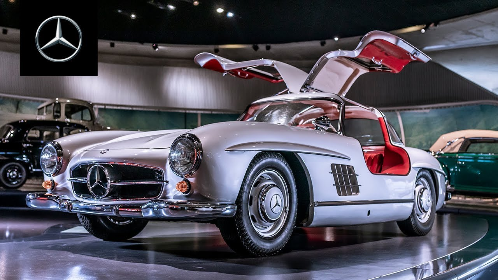
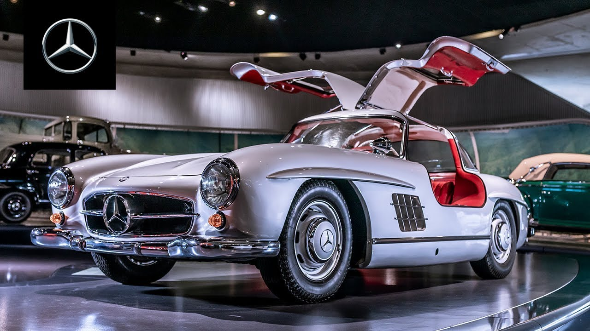

OTOMOBİLİM.COM
Mercedes Benz
1926 yılında Karl Benz'in şirketi Benz & Cie. ve Gottlieb Daimler'in şirketi Daimler Motoren Gesellschaft'in birleşmesi sonucu kurulmuş otomotiv ve motor markası. Almanya`nın Stuttgart şehrinde kurulmuştur.
Şirketin kurucusu Karl Benz, Deutz'daki motor fabrikasındaki görevinin ilk yıllarında, Köln ve Deutz manzaralı evinin tepesine bir yıldız amblemi koymuş, eşine yazdığı mektuplarda bu yıldızın günün birinde başarıyı ve gücü temsil edeceğini ve fabrikasının üzerinde parlayacağını söylemişti. Yıldız Daimler'in, motorlu araçların "karada, suda, havada" evrenselliğini simgelemektedir. 1909'da tescil edildi.
1916 yılında yıldızın etrafı, içinde dört küçük yıldızın ve Mercedes isminin yer aldığı bir daireye çevrildi.
1926'da Daimler-Benz birleşmesi ile Benz'in defne yapraklarından çelengi yıldızın etrafını sardı.
 
